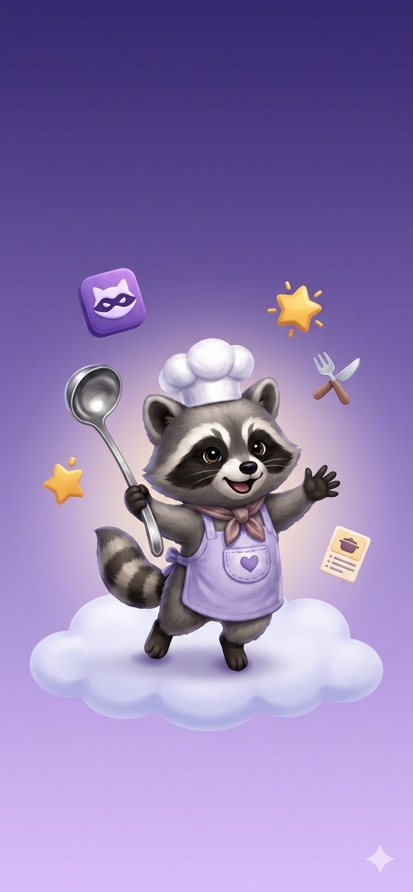
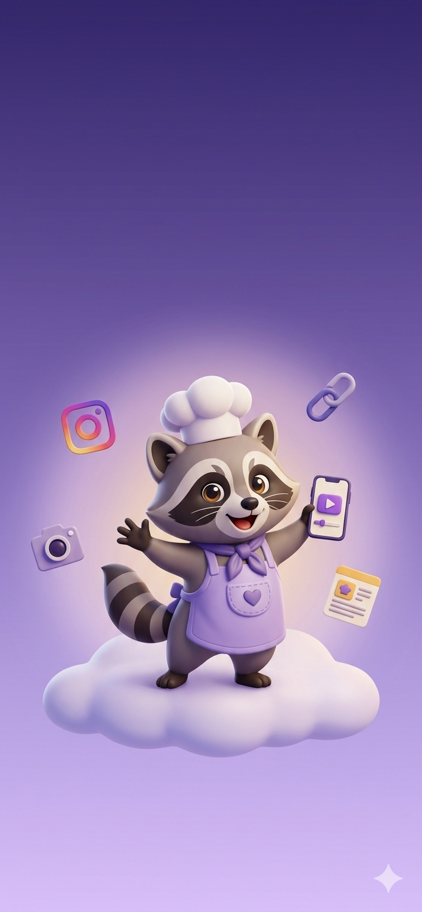
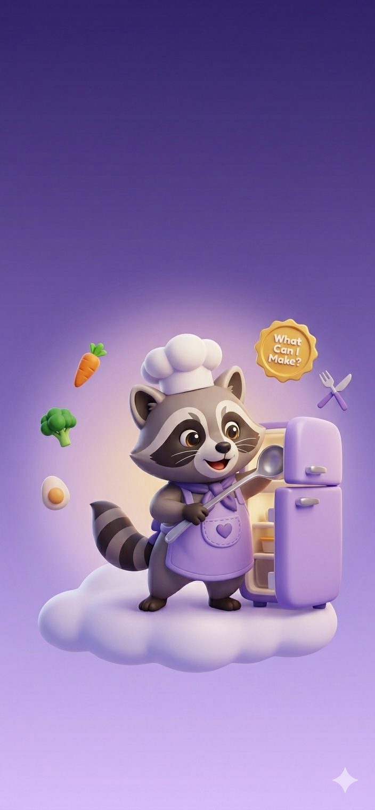
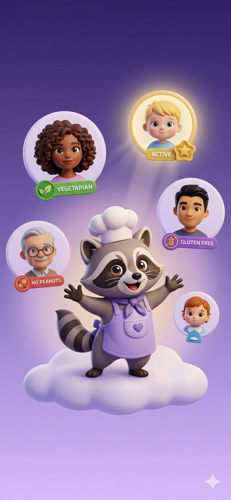
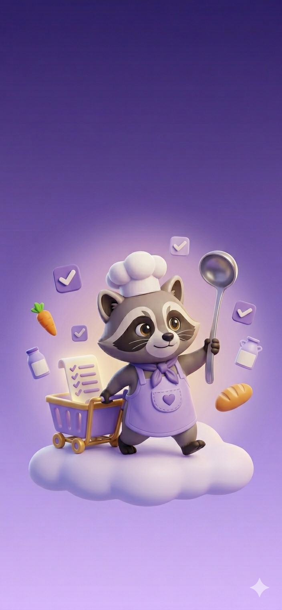

9:41

Welcome to Kitchen Bandits
Your sous-chef for the real world. Outsmart picky eaters and feed your whole crew — every night.
Next
Skip

Save Recipes from Anywhere
Spotted something on TikTok? Instagram? A website? Paste the link — Whisker pulls the recipe, no typing needed.
Next
Skip

What Can I Make?
Tell us what's in your fridge. We'll match it to recipes you can actually cook tonight — no extra grocery run required.
Next
Skip

Feed Your Whole Crew
Set up profiles for everyone at your table — allergies, preferences, picky habits and all. Whisker remembers so you don't have to.
Next
Skip

Your List Writes Itself
Pick your meals for the week and your grocery list is done. One tap to check off items as you shop.
Let's Cook!
Skip